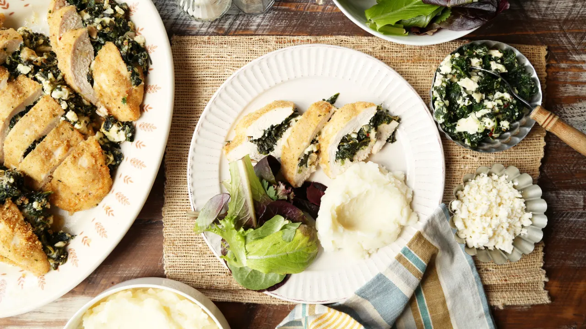
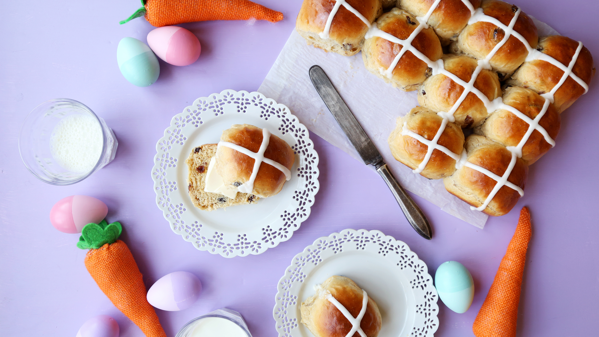

Springtime Favorites

Say good riddance to Old Man Winter with these bright and cheery seasonal picks
Ideas for a Ham-Free Easter Dinner
Not a big fan of the classic glazed ham? Choose from chicken, fish and lamb, or vegetarian stews and sides.
Easter Breads & Cakes
It has risen, indeed! Leavened bread is part of both religious and symbolic Easter traditions, and these easy recipes are perfect for the season.